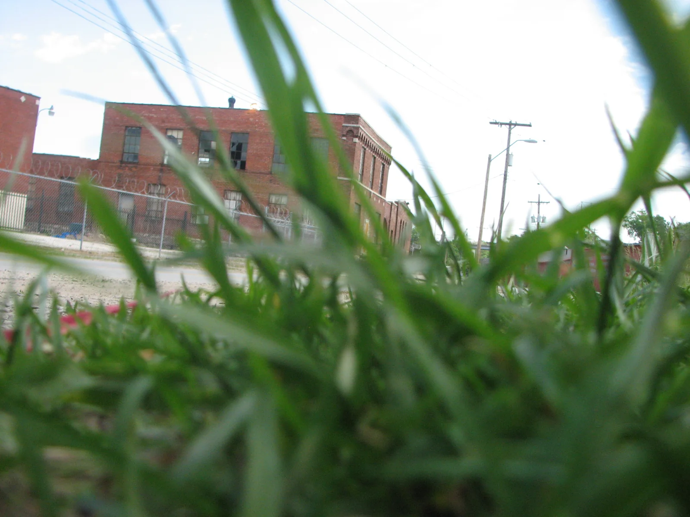
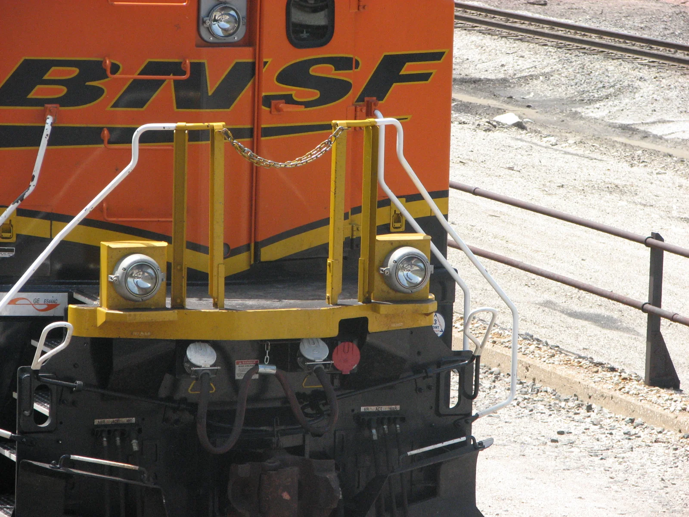

Back in Kansas City.
On Saturday, May 17, photographers had four hours to explore the mapped area and later chose ten photographs each for public voting.
The day
The Safari ran from 9 a.m. to 1 p.m. Contestants selected ten frames and one self portrait, and the site invited visitors to vote for ten favorites.
By the time the gallery opened, there were 61 contestants. The contest’s first tie went to Kevin Sisemore and Alistair Tutton.


The photographs
Explore all ten entries from each photographer, organized by contestant number. The vote tally shows how many votes each frame received.